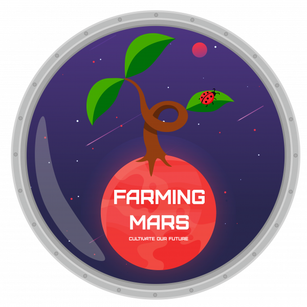

4.1.1. Sujet¶
L’espace, frontière de l’infini vers laquelle voyage notre vaisseau spatial, notre première étape est : Mars. Mais si on arrive à l’heure du déjeuner, comment allons-nous faire pour nous sustenter ? Après tout, les gâteaux de mémère Monique ont tous été mangés l’an passé !
C’est pourquoi nos robots ont une mission très importante pour la bonne réussite de notre voyage : préparer le terrain et faire des réserves de nourriture ! Ou plus exactement, faire en sorte que la serre autonome déjà mis en place survive assez longtemps pour que nos astronautes puissent récolter des fruits et légumes, et ainsi survivre et continuer leur long voyage !
{kind=link}
Génoise, crème, glaçage et sans oublier la fameuse cerise, voilà de quoi cuisiner pour réjouir Grand-mère Monique. À vos cuillères !
Ces missions seront :
Rempoter les plantes et les mettre en culture,
Orienter les panneaux solaires pour que la serre ne perde pas d’énergie,
Assurer la pollinisation des plantes
Reorienter les panneaux solaires
Retourner se recharger les batteries, à la fin de la journée de travail,
Anticiper le futur rendement de la récolte.
{kind=link}
4.1.2. Choix¶
4.1.2.1. Généralités¶
Nous mettrons la priorité a la realisation du robot principal et finir la navigation autonome avant de commencer a realiser le reste
4.1.2.2. Prehenseurs¶
Le robot principal sera equipé d’un elevateur concu une fois. L’objectif et de garder le principe de l’elavateur du prehenseur et de simplement changer l’outil de prehension en s’adaptant au sujet de chaque année. Cet elevateur sera en test sur le robot 1
4.1.2.3. Alimentation¶
Carte d’alimentation plus professionelle, cms, mignaturisation, ajout d’un niveau de batterie. Realisation de la carte par une entreprise locale ou en ligne - Alimentation
4.1.2.4. Motorisation¶
Changement complet de la motorisation du robot, on essaie de passer sur les moteurs DC avec encodeur le tout fournis par Eric SENN. Pour le pilotage, realisation d’une carte par moteur, ce dernier est asservis en vitesse en local grace a l’encodeu. en entree la commande (vitesse et sens) en sortie la nb de rad effectué a une certaine frequence
4.1.2.5. Detection d’obstacle¶
Concervation du lidar pour la detection des robot ennemis. Nous aportons quelque modificaiton
Necessite de rajouter un autre moyen de detection proche du sol pour detecter les pami, lasers ? infrarouge ? ultrasons ?
4.1.3. Robot Principal¶
4.1.3.1. Objectifs¶
Le robot n°1 sera le principal, il aura pour but de :
Rammasser les plantes
Rammasser les pots
Rempoter les plantes dans les pots
Reorienter les panneaux solaires
Prevoir les futurs recolte (prevision des points)
4.1.3.2. Architecture¶
en prevision du sujet de cette année, deux modelisation de robots on ete preparer en avance. une base differentielle et une base holonome a 3 roues. Il nous faut choisir une geometrie entre ces deux dernieres. les ascenseurs ayant prouver leur efficacite, c’est derniers sont pour l’instant concerver sur les bases
indefini
4.1.4. PAMI (Petit actionneur mobile independant)¶
Les PMI font leur retour a la coupe de france de robotique, maintenant sous le nom de PAMI. c’est dernier sont des modules d’une taille superieur a un cube de 60 mm de cote et une hauteur inferieur a 150 mm.
4.1.4.1. Objectifs¶
Les PAMIs sront secondaire, il auront pour but de :
Rentrer dans les zone de cultivation
Poliniser les plantes
4.1.4.2. Architecture¶
indefini